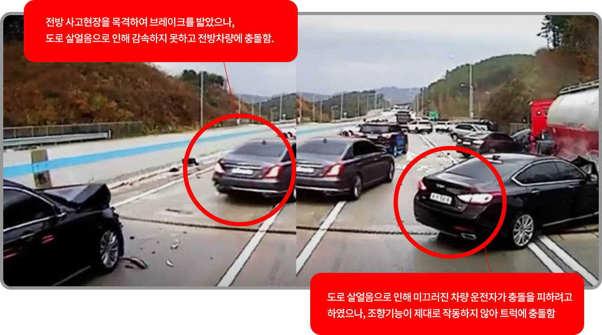
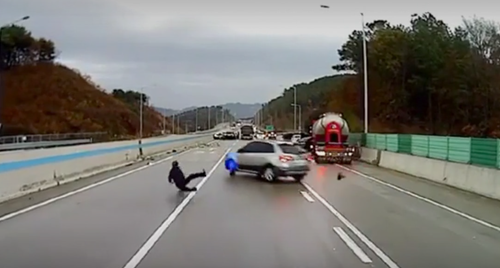

눈에 보이지 않는 공공의 적
도로 살얼음* 교통사고 영상 분석
스며들었던 수분이 밤 사이 기온이 떨어지면서 도로 위에 아주 얇게 얼어붙은 것을 뜻한다.
도로 살얼음 사고가 더욱 위험한 이유는 눈에 보이지 않는 특성 때문에 피하기가 어렵다는 것이다.
지난 2019년 도로 살얼음으로 인한 20중 추돌사고 영상을 돌아보며
도로 살얼음의 위험성을 살펴본다.
법 영상 분석을 위한 수십 편의 논문과 특허를 갖고 있으며, 법원 감정 및 자문위원으로 활동 중이다. 다양한 사연을 가진 의뢰인을 만나서 영상 분석을 통해 억울한 이들의 진실이 밝혀지도록 돕는 일을 하고 있다.

- • 발 생 일2019년 11월 15일 오전 7시 40분경
- • 발 생 위 치경기도 양평군 광주원주고속도로 동양평나들목
- • 사 고 유 형20중 추돌
- • 사 고 원 인도로 살얼음으로 인한 미끄러짐 사고
- • 인 명 피 해사망자 0명/부상자 4명
눈치채는 순간 이미 늦습니다
첫째, 통상적인 일반 도로와 달리 사건 현장의 도로면은 빙막(지면이 얼어 발생한 결빙 표면)에 의한 강한 빛 반사가 식별됩니다. 차량의 형태와 라이트가 도로면에서 강하게 반사되고 있는 것이 그 증거입니다. 이 현상은 특정 한 영역이 아니라 도로 전체에서 식별됩니다.
둘째, 차량이 미끄러지는 모습을 봤을 때, 운전자의 조향과 무관하게 움직이는 형상이 다수의 차량에서 확인됩니다. 이는 운전자가 차량을 제어할 수 없는 상태로 빙막에서 미끄러지는 차량의 패턴과 유사합니다.

셋째, 영상 속 차량 후면에 제동등이 들어 오지만 전혀 감속되지 않고 있습니다. 이는 차량들이 제동을 하였지만 도로 살얼음때문에 지면 마찰이 없어 속도를 줄이지 못하는 현상입니다.
위와 같이 영상에서 식별되는 것들을 종합하였을 때, 본 사고의 주요 원인은 전형적인 도로 살얼음(급격한 기온하락으로 인해 도로 위에 수막이 빙막으로 변하는 도로의 결빙 상태)으로 판단됩니다. 도로 살얼음이 발생하는 원인은 다양합니다. 통상적으로 두 가지의 패턴으로 나눌 수 있습니다. 도로 면에 이슬, 가는 비, 급격한 기온 변화 등의 자연현상으로 발생한 도로 살얼음, 또 하나는 주행 중이던 차량들에서 이탈된 액체 등이 결빙되어 발생하는 인위적 원인으로 인한 도로 살얼음으로 나눌 수 있습니다. 본 사건의 도로 면은 전체적으로 결빙된 상태로 확인되어, 이는 자연현상적 도로 살얼음으로 판단됩니다.
정상 속도보다 천천히, 안전거리는 더 멀리
도로 살얼음은 사람 눈으로 식별이 불가능합니다. 특히 빠르게 주행하는 고속도로의 경우 운전자는 지면의 상태를 감지할 수 없습니다. 결과적으로 불특정 구간에 도로 살얼음이 발생할 경우 정상 속도와 차간 간격을 유지했다고 하더라도 완벽하게 사고를 피할 수는 없습니다. 다만 당할 수 밖에 없는 사고에서 최대한 피해를 줄이기 위한 방법은 있습니다.
온도차가 심한 시기와 겨울철은 더 조심하세요
도로 살얼음은 여름에는 발생하지 않습니다. 대부분 온도차가 심한 시기나 겨울에 발생합니다. 그렇기 때문에 운전자는 이 시기에 특히 주의하여 운전하는 것이 좋습니다.
쉽게 미끄러질 수 있는 내리막길에선 천천히 운행하세요
만약 내리막 구간에서 도로 살얼음을 만난다면 더 큰 사고로 이어질 수 있습니다. 주행 속도에 더해 내리막의 가속까지 합산하면 큰 사고로 이어질 수 있으며, 이런 구간에서 제동은 더욱 어렵습니다. 가능하면 내리막 구간에서는 안전거리를 평소보다 멀리 두고 운전하는 것이 좋습니다.
햇볕이 들지 않는 음지에서 더 경계하세요
운전하다 보면 등장하는 음지는 결빙의 지뢰밭이 될 수 있습니다. 음지의 종류는 다양합니다. 도로 주변에 존재하는 산과 나무들, 또는 건축물들에 의해 음영진 부분은 양지와 달리 온도 차가 심해 원인이 될 수 있습니다. 이런 곳에서도 정상 속도보다 느리게, 안전거리는 더 멀리두고 안전하게 운전하는 것이 좋습니다.
사고가 발생했다면 신속히 대피하세요
운전자가 사고 후 미끄러짐에 의한 사고로 인식하는 순간 절대 도로에 있어서는 안됩니다. 사건 영상과 같이 통제 밖의 운전자를 위해 수신호를 하는 것은 아무런 의미가 없습니다. 그러니 이런 사고가 발생했을 때는 인명피해를 최소화하기 위해 사고 현장에서 멀리 떨어져 도로 밖으로 피신해야 합니다.
영상분석가로서 많은 사건 사고들 속 가해자를 봅니다. 그중 가장 미운 가해자는 자연이었습니다. 자연은 피고인이 될 수 없고, 재판에 세울 수도 없습니다. 피해자는 억울하기만 합니다. 이 억울한 피해자가 없기 위해 우리는 자연과 싸우지 말고 피해야 합니다. 그 방법은 천천히 느리게, 그리고 더 멀리 떨어져서 운전하는 습관만이 피해자가 되지 않는 길입니다.
- ① 졸음운전
- ② 제동장치 이상
- ③ 신호위반
* 정답은 독자 엽서에 체크해 보내주세요. 정답을 맞히신 독자 여러분께는 소정의 선물을 드립니다.
* 헷갈리거나 분석이 필요한 블랙박스 영상이 있다면 cje@kyungsungmedia.com으로 제보해 주세요.